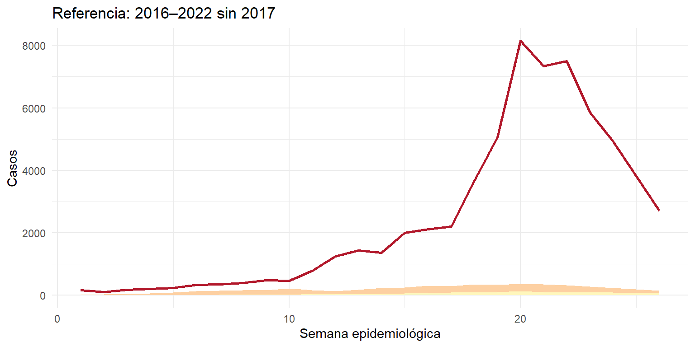
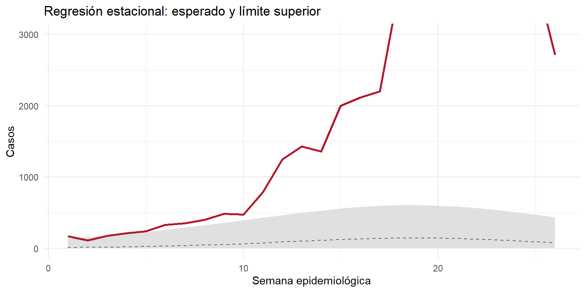
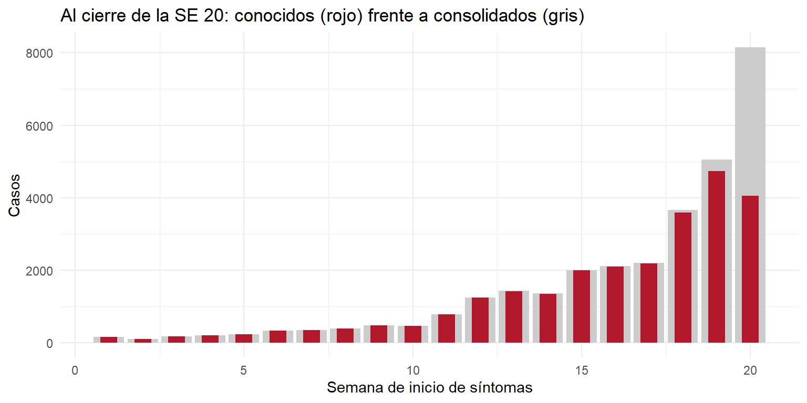

if (.Platform$OS.type == "windows") {
invisible(Sys.setlocale("LC_CTYPE", ".UTF-8"))
}
library(readr)
library(dplyr)
library(tidyr)
library(ggplot2)
dir_datos <- if (dir.exists("datos")) "datos" else file.path("..", "..", "datos")
dengue <- read_csv(
file.path(dir_datos, "procesados", "dengue_piura_semanal.csv"),
col_types = cols(ubigeo = col_character()), show_col_types = FALSE
)
# Casos por año y semana, con ceros explícitos (como en S1 y S2)
serie <- dengue |>
filter(ano <= 2025, semana <= 52) |>
group_by(ano, semana) |>
summarise(casos = sum(casos), .groups = "drop") |>
complete(ano = 2010:2025, semana = 1:52, fill = list(casos = 0)) |>
arrange(ano, semana)
serie |>
group_by(ano) |>
summarise(casos = sum(casos))Práctica 3: ¿desde cuándo había señal de dengue en Piura?
Sesión 3 · Taller
Pregunta
En la S1 vimos que la SE 10 de 2023 tenía muchos más casos que en años anteriores. Ahora el director regional pregunta:
¿Desde qué semana teníamos una señal clara? ¿Y cuánto podemos confiar en la última semana que nos reportan?
La práctica dura unos 40 minutos. Después se presenta el Avance 1.
Objetivos
- Construir un canal endémico por cuartiles y ver cómo cambia según los años de referencia.
- Ajustar una regresión estacional simple y comparar su señal con la del canal.
- Medir el efecto del retraso de notificación en las semanas recientes.
Datos
| Archivo | Contenido |
|---|---|
datos/procesados/dengue_piura_semanal.csv |
Casos de dengue de Piura por año, semana, distrito, clasificación y tipo de diagnóstico (NotiSP), 2010–SE 35 de 2026 |
datos/procesados/dengue_piura_2023_cortes.csv |
Para 2023: casos de cada semana que ya estaban notificados al cierre de la SE 10, la SE 15 y la SE 20, frente a la cifra consolidada |
Ambas bases están agregadas y no contienen registros individuales.
NotaCómo seguir la práctica
Abran inteligencia-sanitaria.Rproj y ejecuten los bloques en orden. Si trabajan fuera del proyecto, reemplacen dir_datos por la dirección https://raw.githubusercontent.com/kemava/inteligencia-sanitaria/main/datos y lean los archivos con read_csv(paste0(dir_datos, "/procesados/...")).
1. Preparar la serie
Pregunta 1. ¿Qué años incluirían como referencia para 2023 y cuáles excluirían? Justifiquen con la tabla anterior.
Respuesta:
2. Canal endémico por cuartiles
Escribimos una función para poder cambiar los años de referencia con facilidad.
canal_endemico <- function(serie, anos_referencia) {
serie |>
filter(ano %in% anos_referencia) |>
group_by(semana) |>
summarise(
q1 = quantile(casos, 0.25),
q2 = median(casos),
q3 = quantile(casos, 0.75),
.groups = "drop"
)
}
graficar_canal <- function(canal, anio = 2023, hasta = 26, titulo = NULL) {
serie |>
filter(ano == anio, semana <= hasta) |>
left_join(canal, by = "semana") |>
ggplot(aes(semana)) +
geom_ribbon(aes(ymin = 0, ymax = q1), fill = "#d9f0d3") +
geom_ribbon(aes(ymin = q1, ymax = q2), fill = "#fff7bc") +
geom_ribbon(aes(ymin = q2, ymax = q3), fill = "#fdd0a2") +
geom_line(aes(y = casos), colour = "#b2182b", linewidth = 1) +
labs(x = "Semana epidemiológica", y = "Casos", title = titulo) +
theme_minimal()
}ref_a <- setdiff(2016:2022, 2017)
canal_a <- canal_endemico(serie, ref_a)
graficar_canal(canal_a, titulo = "Referencia: 2016–2022 sin 2017")
primera_semana_sobre_q3 <- function(canal, anio = 2023) {
serie |>
filter(ano == anio) |>
left_join(canal, by = "semana") |>
filter(casos > q3) |>
summarise(primera = min(semana)) |>
pull(primera)
}
primera_semana_sobre_q3(canal_a)[1] 1Ejercicio 1. Repitan el canal con otras dos referencias: (a) 2016–2022 incluyendo 2017 y (b) solo 2018–2022. Comparen el valor de Q3 en la SE 10 y la primera semana sobre Q3.
# Escriban aquí su códigoPregunta 2. En los tres casos 2023 está sobre Q3 desde muy temprano. ¿Qué explica que 2023 empezara tan alto? Revisen las últimas semanas de 2022.
Respuesta:
3. Regresión estacional
Un modelo con tendencia y estacionalidad estima cuántos casos esperar en cada semana. Usamos una regresión cuasi-Poisson porque los conteos varían mucho más de lo que supone un modelo de Poisson.
serie_t <- serie |>
mutate(t = (ano - 2010) * 52 + semana)
entrenamiento <- serie_t |>
filter(ano %in% setdiff(2015:2022, 2017))
modelo <- glm(
casos ~ t + sin(2 * pi * semana / 52) + cos(2 * pi * semana / 52),
family = quasipoisson,
data = entrenamiento
)
phi <- summary(modelo)$dispersion # sobredispersión estimada
s2023 <- serie_t |>
filter(ano == 2023)
s2023$esperado <- predict(modelo, newdata = s2023, type = "response")
# Límite superior aproximado con una binomial negativa de igual dispersión
s2023 <- s2023 |>
mutate(limite = qnbinom(0.975, mu = esperado, size = esperado / (phi - 1)))
s2023 |>
filter(semana <= 12) |>
select(semana, casos, esperado, limite) |>
mutate(esperado = round(esperado))s2023 |>
filter(semana <= 26) |>
ggplot(aes(semana)) +
geom_ribbon(aes(ymin = 0, ymax = limite), fill = "grey88") +
geom_line(aes(y = esperado), linetype = "dashed", colour = "grey40") +
geom_line(aes(y = casos), colour = "#b2182b", linewidth = 1) +
coord_cartesian(ylim = c(0, 3000)) +
labs(x = "Semana epidemiológica", y = "Casos",
title = "Regresión estacional: esperado y límite superior") +
theme_minimal()
Pregunta 3. El modelo usa una sola onda seno-coseno por año. ¿Qué limitación tiene para un año como 2023? ¿Qué le agregarían?
Respuesta:
4. La última semana nunca está completa
cortes <- read_csv(
file.path(dir_datos, "procesados", "dengue_piura_2023_cortes.csv"),
show_col_types = FALSE
)
cortes |>
filter(corte_se == 20, semana >= 15) |>
mutate(porcentaje_conocido = round(100 * casos_conocidos / casos_consolidados, 1))cortes |>
filter(corte_se == 20) |>
ggplot(aes(semana)) +
geom_col(aes(y = casos_consolidados), fill = "grey80") +
geom_col(aes(y = casos_conocidos), fill = "#b2182b", width = 0.5) +
labs(x = "Semana de inicio de síntomas", y = "Casos",
title = "Al cierre de la SE 20: conocidos (rojo) frente a consolidados (gris)") +
theme_minimal()
Ejercicio 2. Calculen, para el corte de la SE 10, qué porcentaje de los casos consolidados se conocía en la última semana, en la penúltima y en la antepenúltima.
# Escriban aquí su códigoPregunta 4. Si el director hubiera visto el gráfico del corte de la SE 20 sin ninguna advertencia, ¿qué habría concluido? ¿Cómo presentarían esas semanas en un informe?
Respuesta:
Para entregar
En tres líneas: ¿desde qué semana le habrían dicho al director que había una señal clara, con qué método y con qué advertencia sobre las semanas recientes? No hay una sola respuesta correcta; se evalúa la justificación.
Complemento opcional: Farrington flexible
Requiere el paquete surveillance (install.packages("surveillance")).
library(surveillance)
serie_sts <- sts(observed = serie$casos, start = c(2010, 1), frequency = 52)
semanas_2023 <- which(serie$ano == 2023)
control <- list(
range = semanas_2023, b = 5, w = 3, reweight = TRUE,
weightsThreshold = 2.58, pastWeeksNotIncluded = 26,
alpha = 0.05, noPeriods = 10, populationOffset = FALSE, glmWarnings = FALSE
)
resultado <- farringtonFlexible(serie_sts, control = control)
tibble(
semana = 1:52,
casos = observed(resultado)[, 1],
umbral = round(upperbound(resultado)[, 1]),
alarma = alarms(resultado)[, 1]
) |>
filter(semana <= 12)Complemento opcional: nowcast bayesiano simple
El archivo dengue_piura_2023_triangulo.csv tiene los casos de 2023 por semana de inicio y retraso de notificación en semanas (8 = 8 o más). Con él estimamos cuántos casos faltaban al cierre de la SE 20.
triangulo <- read_csv(
file.path(dir_datos, "procesados", "dengue_piura_2023_triangulo.csv"),
show_col_types = FALSE
)
corte <- 20 # semana de cierre
D <- 8 # retraso máximo considerado
S <- 4000 # simulaciones
set.seed(2023)
# Lo que se conocía al cierre
observado <- filter(triangulo, semana_inicio + retraso_semanas <= corte)
# Distribución de retrasos con las 8 semanas completas más recientes (5 a 12)
n_d <- observado |>
filter(semana_inicio %in% (corte - D - 7):(corte - D)) |>
group_by(retraso_semanas) |>
summarise(n = sum(casos), .groups = "drop") |>
complete(retraso_semanas = 0:D, fill = list(n = 0)) |>
pull(n)
# Posterior Dirichlet(1 + n_d): simulamos proporciones de retraso
g <- matrix(rgamma(S * (D + 1), shape = 1 + n_d), nrow = S, byrow = TRUE)
F_acum <- t(apply(g / rowSums(g), 1, cumsum))
# Para cada semana reciente: N - n_obs ~ BinNeg(n_obs + 1, F(d))
nowcast <- lapply((corte - D + 1):corte, function(t) {
n_obs <- sum(observado$casos[observado$semana_inicio == t])
N <- n_obs + rnbinom(S, size = n_obs + 1, prob = F_acum[, corte - t + 1])
tibble(semana = t, conocidos = n_obs, mediana = median(N),
inf = quantile(N, 0.025), sup = quantile(N, 0.975))
}) |>
bind_rows()
consolidado <- triangulo |>
group_by(semana = semana_inicio) |>
summarise(consolidado = sum(casos))
left_join(nowcast, consolidado, by = "semana")Pregunta 5. ¿En qué semanas el intervalo del nowcast contiene la cifra consolidada? ¿Por qué falla en la SE 20? Piensen en qué pasa con los retrasos cuando los servicios están saturados.
Respuesta:
Limitaciones
- Trabajamos con datos consolidados. En tiempo real, las semanas recientes estarían incompletas y todas las señales se verían más tarde o más débiles.
- Usamos conteos. Si la población cambió mucho entre años, conviene usar tasas.
- La serie es departamental. Una señal departamental puede esconder distritos con brotes y otros sin casos (S4).
- Ningún umbral es correcto por sí mismo: cada uno fija cuántas falsas alarmas se aceptan.